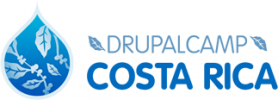

El 26 de mayo de 1995, naci, en San Jose, Costa Rica. Vivi en Curridabat, rodeado de personas interesantes y conviviendo lo mejor que podia, lleno de metas y optimismo visualize mi futuro.
Comence mis estudios en la Escuela Centro America, pase tres años en el Liceo de Curridabat y por ultimo saque mi bachillerato y el tecnico medio en Contabilidad. Tuve la gran oportunidad de ser parte de la Segunda Generacion de estudiantes del Centro Tecnologico y Artes Visuales, donde me prepare como Diseñador y Desarrollador Web. El mismo periodo de tiempo estudie Ingles por parte del INA y me prepare como un gran estudiante en busca de mi profesion.
Como todas las personas, tenia metas para mi futuro, tomando en cuenta mi familia y amigos, me considero una persona sociable, profesional en lo que hago y me propongo hacer, no busco ser el mejor pero si uno de ellos.


Fui parte de la II Gereneracion, en la carrera de Diseño y Desarrollo Web. Duracion: 20 meses. Cursos: JavaScript, Analisis y Diseño de Interfaces, Desarrllo de Sitios, Habilidades para la empleabilidad, Pensamiento Creativo.

Se me brindo la oportunidad de estudiar Ingles para el sector comercial en el CETAV. Duracion: 18 mesess Cursos: Ingles Basico, Intermedio.

Gracias a las oportunidades que me brindo el CETAV, fui parte del Festival Internacional de Diseño, durante los dias 12 -13 y 14 de marzo del 2015.
Fuimos parte del Drupal camp que se realizo en la Universidad de Costa Rica donde aprendi diferentes experiencias para saber mas sobre diseño web y sus partes.